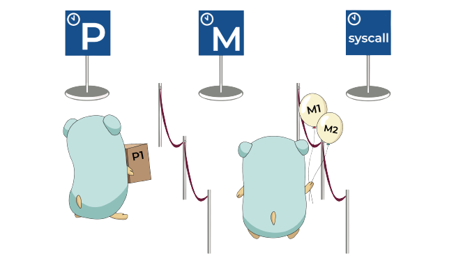

Go scheduler

О чем говорим
процессор
многозадачность и многопоточность
OS scheduler и прерывания
проблемы многопоточности
thread pool
асинхронность и event loop
io bound и cpu bound
системные вызовы
Go sheduler
проблемы Go scheduler-a?!